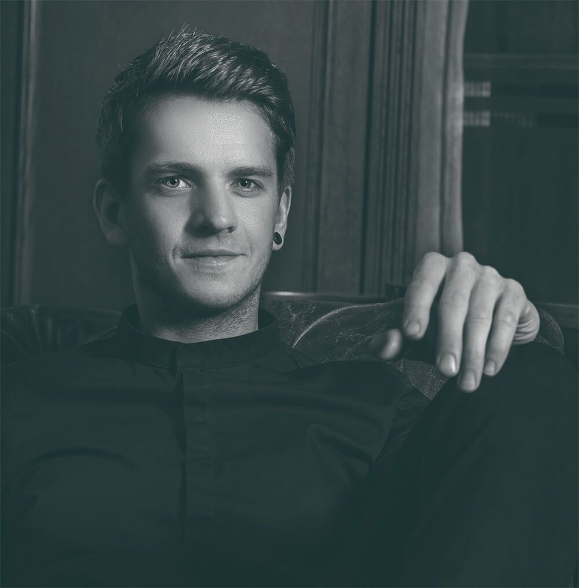
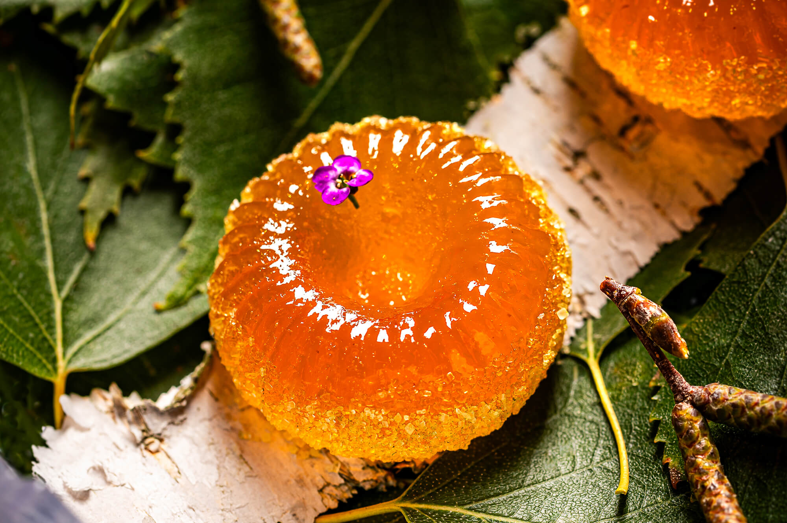
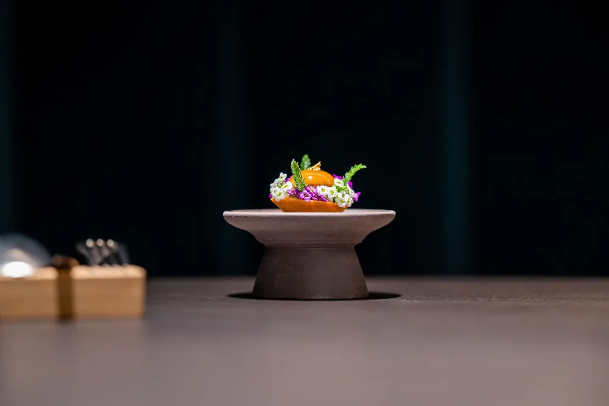
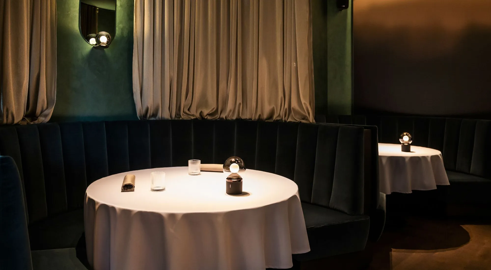
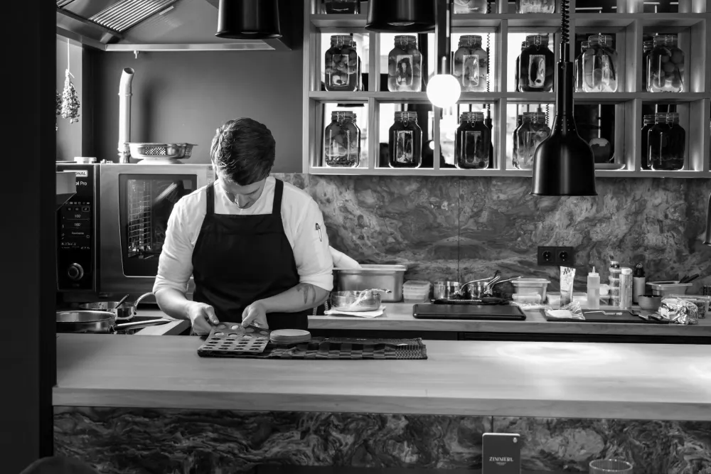
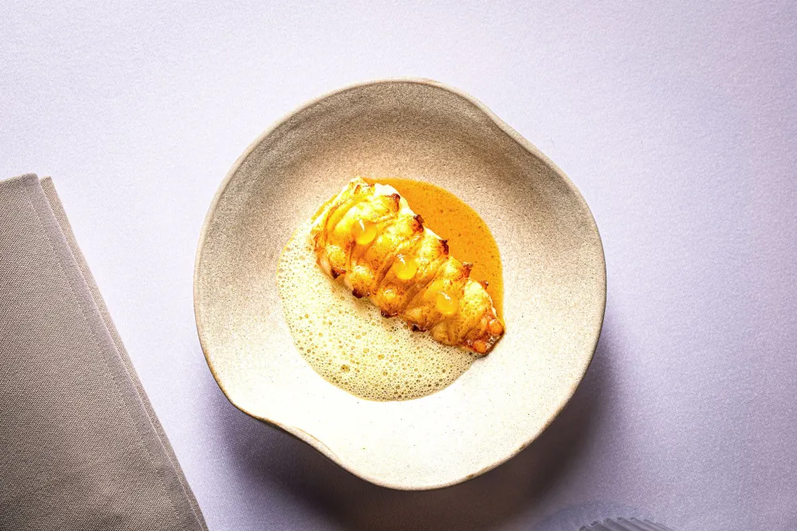
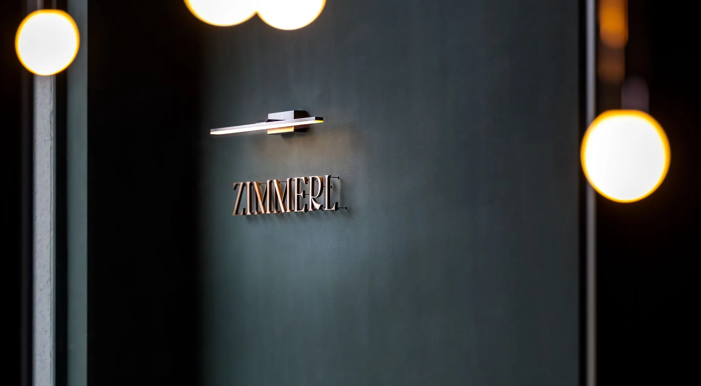
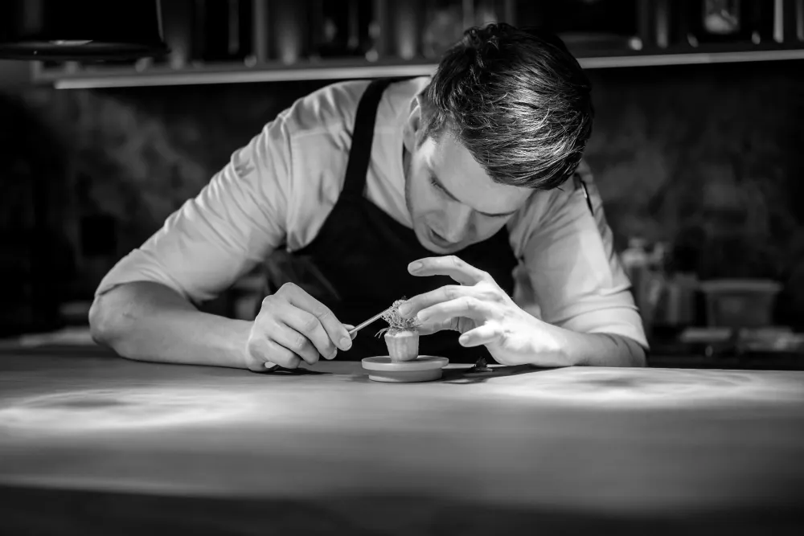

20 Years of Restaurant Kesar
Two decades of unconditional devotion, radical culinary precision, and an insatiable passion for pure, unadulterated flavor in the heart of Austria's Waldviertel.

From relentless curiosity to one of Austria’s premier dining destinations.
Exactly 20 years ago, a culinary quest began with a singular yearning: to capture the true essence of each ingredient in its purest form and express it on the plate. Head chef Bernhard Kesar did not follow conventional paths; he mastered the fine art of gastronomy through relentless self-driven study, acute sensory sensitivity, and deep reverence for the craft.
What began two decades ago as an audacious dream is now an intimate sanctuary in Waidhofen an der Thaya. Here, French haute cuisine technique, Japanese minimalist philosophy, and the raw beauty of the Waldviertel landscape unite into an unparalleled sensory journey.
For Bernhard Kesar, cooking is not merely an occupation—it is the language through which he shares his world with guests: authentic, uncompromising, and immune to fleeting trends.
Milestones of Our Odyssey
Bernhard Kesar discovers an ignited passion for culinary alchemy, flavors, and product integrity. The foundational years spark a lifelong pursuit of technical perfection.
Founding of the location in Waidhofen an der Thaya. Gaining full creative independence to shape a distinct culinary identity without external compromise.
Establishing the restaurant’s private organic agriculture and free-range chicken coop in Waldviertel. Creating a closed circular loop from harvest to compost.
Radical reimagination with award-winning interior architecture by Meindl Cavar Concepts. Limiting dining capacity to just 5 tables for an intimate, personal chef’s room experience.
Honored by the Guide Michelin, Gault&Millau, Falstaff, and Schlemmer Atlas. Named one of Rolling Pin’s 100 Best Chefs in Austria.
The Austrian Chefs Association (VKÖ) confers Bernhard Kesar the coveted title »Koch der Köche 2025« — the ultimate peer recognition in Austrian gastronomy.
Celebrating 20 years of dedication with an impeccably curated 23-course journey. Reflecting with gratitude on past accomplishments while pioneering the next era of culinary artistry.
The Four Pillars of Kesar
Mindful Closed Cycle
Vegetables cultivated in our own Waldviertel plots, harvested at optimum ripeness. Organic trims nourish our hens, who provide fresh eggs daily. A respectful cycle attuned to nature.
Worldly Fusion
Classical French technique balanced by Japanese serenity and the earthy purity of the Waldviertel. Only the world's finest artisanal ingredients grace our kitchen.
Uncompromising 23 Courses
Every single course is composed as an unalterable chapter of an overarching harmony. Zero shortcuts or compromises—pure concentration on texture, nuance, and depth.
5-Table Intimacy
Deliberately restricted to just 5 tables per service. Guests dine immersed in the live chef's room action, surrounded by bespoke craftsmanship and peaceful intimacy.
“Every dish originates directly from my mind—composed with profound respect for nature, perfected over 20 years of relentless practice. Genuine cuisine needs no disguise; it demands total devotion.”
Handcrafted Plates & Soulful Wine Pairing
The 20-year ethos of Kesar extends far beyond the kitchen stove. Every ceramic dish is custom thrown by local master potters of the Waldviertel. The ambient lighting, bespoke tactile furnishings, and acoustic warmth were custom crafted by Meindl Cavar Concepts.
Our certified Sommelière harmonizes the 23-course progression with rare vintages, biodynamic grower bottles, and storied icons that illuminate the nuances of each plate.

Moments of 20 Years






Award-Winning Fine Dining
Celebrate 20 Years of Kesar
Join us in honoring two decades of culinary devotion at one of our five tables. Advance reservation is strongly recommended.
Heidenreichsteiner Straße 28 • 3830 Waidhofen/Thaya • Austria
Thursday | from 18:00 |
Friday | from 18:00 |
Saturday | from 18:00 |
Book a Table